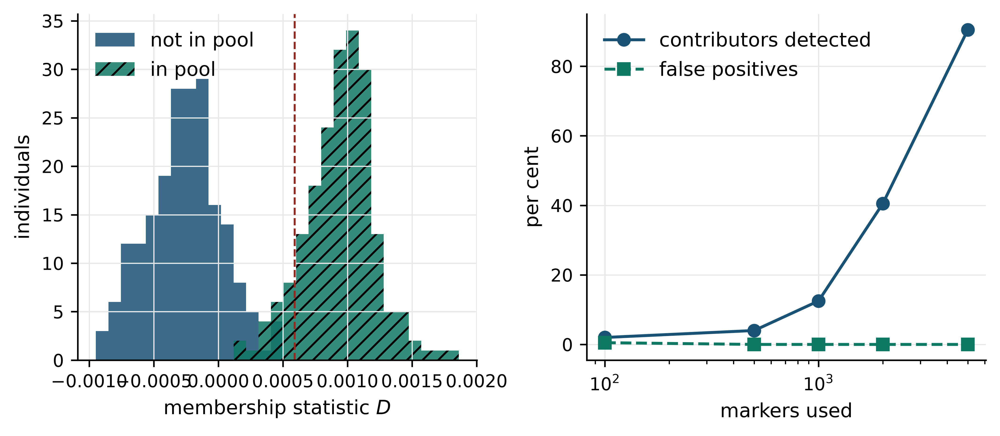
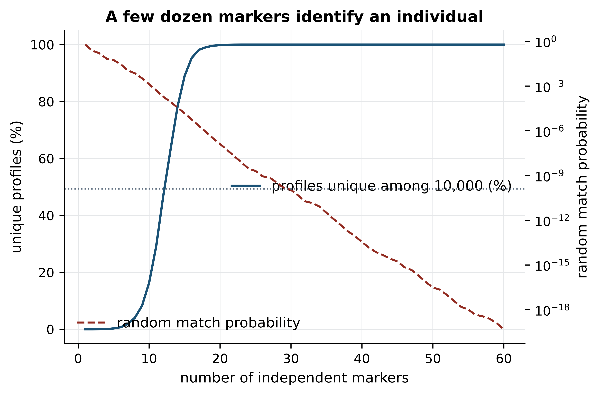

import sys; sys.path.insert(0, "..")
from pybfx import book_data, style
style()14 Working responsibly with genomic data
After working through this chapter you will be able to
- explain which properties of genomic data make it harder to protect than other personal data
- describe the mechanism of surname inference and of allele-frequency membership attacks
- compute how many independent markers are needed to make a genotype profile unique in a population of a given size
- compare broad, tiered and dynamic consent against the uses a project actually intends
- evaluate a controlled-access arrangement against the five safes framework
- justify a data-sharing plan under GDPR, HIPAA, the NDPR and the Nagoya Protocol without overstating what the law requires
- apply a pre-submission checklist to your own project covering consent, access, credit and reproducibility
Everything in this book so far has treated data as a technical object: a FASTA file to parse, a VCF to filter, a count matrix to normalise. Most of the data you will work on in a career is not a technical object alone. It came from a person who signed a form, who may still be alive, who has relatives who signed nothing, and who was promised something in return for the sample. The promise is usually vague, often unread, and almost never revisited. Your analysis inherits it.
This chapter is about the obligations that travel with human genomic data and about what competent practice looks like when those obligations bite. It is not a list of principles to agree with. Principles are easy; the difficult part is that privacy, scientific usefulness, speed and equity trade against one another, and a working bioinformatician has to make the trade explicitly rather than let it be made by default. Three concrete questions organise the chapter. How identifiable is a genotype, really? Who gets to decide what happens to a dataset once it exists? And who benefits from the result?
The first question has a quantitative answer, and you will compute it. Using genotypes simulated in the chapter — never real individual data — you will measure how many independent markers make a profile unique in a population of ten thousand, and implement the statistic behind the allele-frequency attack that ended open posting of genome-wide association study (GWAS) summary data. The rest of the chapter works outward from those two computations, through consent, governance and law, to the questions of representation and benefit sharing that matter most if you work in or with a population that genomics has historically used rather than served. It closes with a checklist you can apply before a project starts, which is the only point at which most of these decisions are cheap.
14.1 Setting up
This chapter uses no bundled data. Human genotype data is exactly the material whose circulation the chapter is about, so the demonstrations use genotypes simulated from scratch with a fixed seed, which makes them reproducible without putting anyone at risk.
14.2 Properties that make genomic data exceptional
Data-protection law was written with names, addresses and account numbers in mind. Those identifiers share a convenient property: they can be changed. A compromised credit card is reissued; a genome is not. Four properties set genomic data apart, and each one breaks a control that works for ordinary personal data.
It is identifying in itself. A genotype is not data about a person that happens to be linked to an identifier — it is an identifier, and a better one than a name. You will show below that a few dozen common single-nucleotide polymorphisms (SNPs) are enough to pick one person out of a population the size of a city, and that the same calculation extended to the whole species needs only a few more markers. This is why forensic systems work at all, and it is why stripping names from a variant file does not make it anonymous. The genotype is the name.
It is immutable. The usual response to a breach — revoke the credential and issue a new one — has no analogue. A genome disclosed in 2015 is still disclosing in 2045, and it will be disclosing against a background of analytical methods that did not exist when it was released. Risk assessments made at the time of deposit therefore decay in one direction only. A dataset judged safe to post openly in 2008 can become re-identifiable in 2013 without anyone touching the file, which is precisely what happened.
It is shared with relatives. Consent is individual; inheritance is not. A person who deposits their own exome discloses, probabilistically, about half of each of their parents’ and children’s variants and a quarter of each sibling’s, and discloses the Y haplotype of every patrilineal male relative. No consent framework built around individual autonomy handles this cleanly, because the people most affected by a disclosure may never have been asked. Long-range familial search, the technique that has since been used to identify suspects in cold cases from third-cousin matches in consumer genealogy databases (Erlich et al. 2018), is the operational form of this property: you do not need a person in a database to find them, only a relative.
It is predictive, incompletely. A genotype supports probabilistic statements about future disease, drug response and traits whose social meaning is contested. Those predictions are weak for most common disease and strong for a handful of monogenic conditions, and they are easy to over-read by employers, insurers and relatives who cannot distinguish a relative risk of 1.2 from a diagnosis. The asymmetry is the harm: too weak to act on clinically, quite strong enough to be socially damaging.
Pseudonymised is not anonymous
These two words are often used interchangeably and mean different things in law and in practice. Pseudonymised data has direct identifiers replaced by a code, with the key held separately; it is still personal data, because re-identification remains possible for whoever holds the key or can obtain equivalent information. Anonymous data cannot be linked back to an individual by any party using means reasonably likely to be used. Under this definition, individual-level genotype data is essentially never anonymous. Almost everything described as “de-identified genomic data” is pseudonymised, and should be governed accordingly.
14.3 Mechanics of re-identification
Two published attacks changed how genomic data is governed. Both are worth understanding mechanically rather than as cautionary slogans, because the mechanisms tell you which mitigations work.
Surname inference
The Y chromosome and the patrilineal surname are transmitted together in most cultures. Genetic genealogists exploited this long before anyone thought of it as an attack: commercial databases map Y short-tandem-repeat (Y-STR) haplotypes to surnames contributed by paying customers. Gymrek et al. (2013) showed that the inference runs in the other direction too. Starting from a male participant’s Y-STR profile, recoverable from whole-genome sequence data in a public research archive, they queried genealogy databases for surname matches, then combined a candidate surname with the participant’s age and state of residence — both published as metadata — and searched public records. The search space collapses quickly: a surname, a birth year and a US state together specify very few people.
Nothing in that chain is exotic: the genealogy query is a web form, the record search is a public database, and the metadata were released deliberately as part of good data documentation. The attack composes three legitimate resources, none of which is a breach on its own. That is the general shape of re-identification, and it is why “we removed the identifiers” is not a sufficient answer — the question is what an adversary can join your release to, and that set grows every year.
The mitigations follow from the mechanism: withhold or coarsen Y-STR haplotypes, and generalise quasi-identifiers such as age, locality and sampling date into bands. Both cost analytical value — a ten-year age band weakens a study of age-related expression — so the decision is a trade, and should be documented as one.
Allele-frequency and membership attacks
The second attack targets summary statistics rather than individual records, which is why it was so disruptive. Until 2008, consortia routinely published allele frequencies for cases and controls, on the reasonable view that an average over hundreds of people reveals nothing about any one of them. Homer et al. (2008) showed otherwise. Given an individual’s genotypes and a reference population’s allele frequencies, you can test whether that individual contributed to a pool whose aggregate frequencies you have been given. The individual’s own genotypes pull the pool frequencies very slightly towards themselves at every marker; the pull is far below noise at one marker, but you have hundreds of thousands of markers, and the evidence accumulates.
The statistic is a difference of distances. For each marker \(j\), take the individual’s allele dosage \(y_j\) (0, 0.5 or 1 as a frequency), the pool’s reported frequency \(\hat{p}_j\) and the reference frequency \(p_j\), and compute how much closer the individual sits to the pool than to the reference:
\[ D = \frac{1}{m}\sum_{j=1}^{m} \left( |y_j - p_j| - |y_j - \hat{p}_j| \right) \tag{14.1}\]
If the individual is not in the pool, the two distances differ only by sampling noise and \(D\) scatters around zero. If the individual is in the pool, \(D\) is positive. Everything depends on the number of markers \(m\), the pool size, and how well the reference frequencies match the individual’s ancestry.
We can simulate this directly. The population below has 5,000 independent markers with minor allele frequencies drawn between 5% and 50%; 200 individuals form the pool whose frequencies are published, and 200 others do not.
import numpy as np
rng = np.random.default_rng(42)
n_markers, pool_size, outside_size = 5000, 200, 200
# Reference allele frequencies, assumed published for the study population.
reference_frequency = rng.uniform(0.05, 0.50, n_markers)
pool_dosages = rng.binomial(2, reference_frequency, size=(pool_size, n_markers)) / 2.0
outside_dosages = rng.binomial(2, reference_frequency, size=(outside_size, n_markers)) / 2.0
# This is the only thing the attacker receives: per-marker averages over the pool.
published_frequency = pool_dosages.mean(axis=0)
print(f"published summary: {n_markers:,} allele frequencies over {pool_size} people")
#> published summary: 5,000 allele frequencies over 200 peopleThe attacker’s test is four lines. Note that it uses no individual-level data from the study at all — only the published frequencies, the reference frequencies, and the genotypes of the person being tested, which an attacker would have from a discarded sample, a consumer test or a forensic database.
def membership_statistic(dosages, published_frequency, reference_frequency):
"""Mean distance gained by comparing an individual to the pool rather than
to the reference population; positive values suggest pool membership."""
to_reference = np.abs(dosages - reference_frequency)
to_pool = np.abs(dosages - published_frequency)
return float(np.mean(to_reference - to_pool))
inside = np.array([membership_statistic(g, published_frequency, reference_frequency)
for g in pool_dosages])
outside = np.array([membership_statistic(g, published_frequency, reference_frequency)
for g in outside_dosages])
print(f"in pool: mean {inside.mean():+.5f}, sd {inside.std():.5f}")
#> in pool: mean +0.00095, sd 0.00027
print(f"not in pool: mean {outside.mean():+.5f}, sd {outside.std():.5f}")
#> not in pool: mean -0.00026, sd 0.00028The separation is small in absolute terms and large relative to the noise, which is the signature of an attack that works by accumulation. Figure 14.1 shows the two distributions and the way detection improves as more markers are used.
import matplotlib.pyplot as plt
marker_counts = [100, 500, 1000, 2000, 5000]
detected, false_positive = [], []
for m in marker_counts:
a = np.array([membership_statistic(g[:m], published_frequency[:m],
reference_frequency[:m]) for g in pool_dosages])
b = np.array([membership_statistic(g[:m], published_frequency[:m],
reference_frequency[:m]) for g in outside_dosages])
threshold = b.mean() + 3 * b.std()
detected.append(100 * (a > threshold).mean())
false_positive.append(100 * (b > threshold).mean())
fig, (ax1, ax2) = plt.subplots(1, 2, figsize=(7.2, 3.2))
bins = np.linspace(min(outside.min(), inside.min()), max(outside.max(), inside.max()), 30)
ax1.hist(outside, bins=bins, label="not in pool", alpha=0.85)
ax1.hist(inside, bins=bins, label="in pool", alpha=0.85, hatch="///")
ax1.axvline(outside.mean() + 3 * outside.std(), linestyle="--", color="#922B21", linewidth=1)
ax1.set_xlabel("membership statistic $D$"); ax1.set_ylabel("individuals"); ax1.legend()
ax2.plot(marker_counts, detected, marker="o", label="contributors detected")
ax2.plot(marker_counts, false_positive, marker="s", linestyle="--", label="false positives")
ax2.set_xscale("log"); ax2.set_xlabel("markers used"); ax2.set_ylabel("per cent"); ax2.legend()
fig.tight_layout()
With 5,000 markers the test identifies 90% of the 200 contributors with no false positives among the 200 non-contributors; with 500 markers it identifies almost none. Power comes from marker count, not from effect size at any locus, so the attack strengthens as arrays and sequencing panels grow denser. Note also what the attack needs: the attacker must already hold the target’s genotypes and must be testing a specific hypothesis about a specific person. That limits who can mount it, but not by much, and the consequence is severe when the pool is defined by a sensitive phenotype — membership in an HIV-positive case group is itself the disclosure.
The response of the funders was immediate and, in retrospect, correct: in 2008 the US National Institutes of Health and the Wellcome Trust withdrew open access to GWAS aggregate statistics and moved them behind the controlled-access arrangements described in Section 14.5. Erlich and Narayanan (2013) is the standard survey of the attacks that followed and of the defences available; it is the single most useful reference in this area and is worth reading in full before you design any release.
The uniqueness of a genotype profile
The attacks above answer a narrow question — was this person in this pool? The broader question is how much genotype data constitutes an identifier at all, and that has a clean answer you can compute. Two individuals match at a marker with probability equal to the sum of squared genotype frequencies; under Hardy–Weinberg equilibrium with minor allele frequency \(p\) this is \((1-p)^4 + 4p^2(1-p)^2 + p^4\), which is minimised at 0.375 for \(p = 0.5\) and rises towards 1 for rare variants. Multiply across independent markers and the random match probability falls geometrically.
Simulation makes the consequence concrete. The population below contains 10,000 individuals typed at 60 independent markers with minor allele frequencies between 5% and 50% — a deliberately modest panel, far smaller than any real array.
population_size, panel_size = 10_000, 60
rng = np.random.default_rng(20250101)
minor_allele_frequency = rng.uniform(0.05, 0.50, panel_size)
genotypes = rng.binomial(2, minor_allele_frequency,
size=(population_size, panel_size)).astype(np.int8)
print(f"simulated {genotypes.shape[0]:,} individuals x {genotypes.shape[1]} markers")
#> simulated 10,000 individuals x 60 markers
print(f"mean minor allele frequency: {minor_allele_frequency.mean():.3f}")
#> mean minor allele frequency: 0.275A profile is unique when no other individual in the population carries the same genotype at every marker in the panel. Counting is a matter of finding duplicate rows.
def fraction_unique(genotype_block):
"""Proportion of rows that appear exactly once in the genotype block."""
_, counts = np.unique(genotype_block, axis=0, return_counts=True)
return (counts == 1).sum() / genotype_block.shape[0]
for markers in (5, 10, 15, 20, 25, 30):
print(f"{markers:3d} markers: {100 * fraction_unique(genotypes[:, :markers]):6.2f}% unique")
#> 5 markers: 0.29% unique
#> 10 markers: 16.32% unique
#> 15 markers: 88.95% unique
#> 20 markers: 99.82% unique
#> 25 markers: 100.00% unique
#> 30 markers: 100.00% uniqueTen markers leave most people in a crowd; 15 isolate nine in ten; by 25 every one of the 10,000 simulated individuals is unique. Figure 14.2 plots the curve against the analytic expectation and against the random match probability, which is the quantity that generalises beyond the simulated sample.
panel_sizes = range(1, panel_size + 1)
measured = [100 * fraction_unique(genotypes[:, :m]) for m in panel_sizes]
per_marker_match = ((1 - minor_allele_frequency) ** 4
+ 4 * minor_allele_frequency ** 2 * (1 - minor_allele_frequency) ** 2
+ minor_allele_frequency ** 4)
random_match = np.cumprod(per_marker_match)
fig, ax = plt.subplots()
ax.plot(list(panel_sizes), measured, linewidth=1.6, label="profiles unique among 10,000 (%)")
ax.set_xlabel("number of independent markers"); ax.set_ylabel("unique profiles (%)")
twin = ax.twinx()
twin.plot(list(panel_sizes), random_match, linestyle="--", color="#922B21",
linewidth=1.4, label="random match probability")
twin.set_yscale("log"); twin.set_ylabel("random match probability"); twin.grid(False)
twin.axhline(1 / 8e9, color="#5D6D7E", linewidth=0.9, linestyle=":")
ax.legend(loc="center right"); twin.legend(loc="lower left")
ax.set_title("A few dozen markers identify an individual")
fig.tight_layout()
The dotted horizontal line marks one in eight billion, roughly the reciprocal of the human population. The random match probability crosses it at 30 markers for this panel. That number is the honest version of the claim that genomic data is identifying: not a slogan, but a geometric decay you can derive in three lines. It also explains two facts that otherwise look arbitrary — why forensic and sample-tracking panels use a few dozen markers rather than thousands, and why a VCF containing even a small subset of common variants must be treated as identifiable data regardless of what has been stripped from its header.
The simulation is optimistic, in both directions
Real markers are not independent: linkage disequilibrium means adjacent SNPs carry overlapping information, so a real panel of 30 typed SNPs identifies less well than 30 simulated independent ones. Population structure cuts the other way, concentrating particular profiles in particular groups. Use the calculation above to understand the mechanism and the order of magnitude, not to certify a specific release as safe; that assessment needs the actual linkage structure and the actual reference panel.
14.4 Consent models and the return of results
A consent form is a contract between a participant and a project about future uses that neither can fully foresee. Three designs dominate, and each resolves that tension differently.
Specific consent names the study and its question. It is the clearest ethically and the most restrictive computationally: data collected to study tuberculosis susceptibility cannot later be used to study drug metabolism without returning to the participants, which for a decade-old cohort is often impossible.
Broad consent asks permission for future health-related research in general, with oversight delegated to a research ethics committee and a data access committee. It is the model under which most biobanks operate and the reason that large cohorts remain analytically useful for decades. Its cost is that the participant’s agreement becomes thin: a person who consented to “health research” in 2010 did not contemplate polygenic embryo screening, or machine-learning models trained on their sequence and sold under licence. Knoppers (2014) sets out the framework under which broad consent is usually defended — that the participant consents to a governance process, not to a list of projects — which is coherent, and which depends entirely on the governance process actually working.
Tiered consent decomposes the question: the participant chooses separately whether to permit commercial use, whether to allow deposition in international archives, whether to be re-contacted, and whether to receive findings. It respects participants’ heterogeneous preferences, and it creates the operational problem that your cohort fragments into subsets with different permissions. If you have ever had to compute an association on the 2,100 of 3,000 participants whose consent permits industry collaboration, you know that the consent matrix has to be a column in your sample table from day one, enforced in code, not a PDF in a filing cabinet.
Dynamic consent adds a channel: participants hold an account through which they see what has been done with their data and can change their permissions at any time. It is the most responsive model and the most demanding to run, requiring sustained software, identity management and the ability to withdraw data from published analyses; it is adopted by well-resourced cohorts and promised by many more.
Choosing between these is not a matter of picking the most ethical-sounding option but of matching the consent to the uses you can actually honour, and then enforcing it in the pipeline. A tiered consent that nobody checks is worse than a broad consent honestly obtained.
Findings you did not go looking for
An exome sequenced to study epilepsy also contains BRCA1. Whether to look, and whether to tell, is the problem of incidental or secondary findings — the distinction being that incidental findings turn up unsought, whereas secondary findings are those a project deliberately screens for beyond its primary question.
The argument for return rests on beneficence: a pathogenic BRCA1 variant in a woman who does not know about it is an actionable, preventable risk, and withholding it from someone whose sample you hold is hard to defend. The argument against rests on four practical facts. Research-grade sequencing is not clinically validated, so calls may be wrong. Interpretation shifts, and Richards et al. (2015) exists precisely because classifying a variant is an evidence-weighing exercise rather than a lookup. Returning a result imposes a care pathway — confirmatory testing, counselling, surveillance — that many projects cannot fund and many health systems cannot absorb. And the participant may not have agreed to receive it.
The consensus that has emerged is narrow and defensible: return findings that are clinically validated in an accredited laboratory, that concern conditions which are serious and actionable, and that the participant agreed in advance to receive. Everything outside that intersection is not returned. Specify the intersection in the protocol before sequencing, because deciding after you have seen a pathogenic variant is deciding under pressure, and specify who makes the call, because it should not be the bioinformatician who noticed it at midnight.
You are not the person who returns a result
If you find a variant with apparent clinical significance in research data, do not contact the participant, do not tell the clinician informally, and do not mention it to the laboratory group. Escalate through the route your protocol specifies — usually the principal investigator and the research ethics committee — and record what you found and when. The route exists so that the decision is made by people with the clinical and legal standing to make it, and so that the participant’s prior wishes about receiving results are honoured rather than overridden by your discovery.
14.5 Governance and controlled access
Because individual-level human genomic data cannot be anonymised, the governance model is not anonymity but controlled access: the data stay in a managed repository, and investigators apply for permission to use them for a stated purpose.
The two principal archives are the database of Genotypes and Phenotypes (dbGaP) at NCBI and the European Genome-phenome Archive (EGA) at EMBL-EBI and the Centre for Genomic Regulation. Both hold summary metadata openly — study design, variables measured, sample counts — so that a researcher can discover that a dataset exists and judge whether it suits their question. Individual-level data sit behind an application. Sayers et al. (2021) describes the NCBI side of this arrangement; the archives are also the reason that a paper’s data availability statement reading “available in dbGaP under accession phsXXXXXX” is a real commitment rather than a brush-off, since the accession can be checked.
The application is assessed by a data access committee (DAC), whose members are usually a mixture of study investigators, ethicists and, in better-designed cases, community representatives. A DAC asks whether the proposed use falls within the consent the participants gave, whether the applicant’s institution has signed an agreement accepting the obligations, and whether the requested data are the minimum needed. Decisions take weeks to months. Plan for it: a project that assumes dbGaP access will be granted in time for a conference deadline is a project that will not have data.
A useful way to think about the whole arrangement is the five safes framework, developed for official statistics and now widely used for health data. It decomposes “is this access safe?” into five questions that can be answered separately:
| Dimension | Question the framework asks |
|---|---|
| Safe projects | Is the proposed use appropriate, lawful and within consent? |
| Safe people | Is the applicant trained, accountable and bound by an agreement? |
| Safe settings | Does the technical environment prevent copying, leakage and onward transfer? |
| Safe data | Have the data been minimised and coarsened as far as the question allows? |
| Safe outputs | Have the results been checked so they do not disclose individuals? |
Table 14.1 reframes the negotiation, because a weakness in one dimension can be compensated elsewhere. A committee that cannot make the data safe enough to release can instead make the setting safer, by requiring analysis inside a trusted research environment that the data never leave — the direction most national initiatives have taken. Federated analysis pushes this further: the Beacon protocol and the standards of the Global Alliance for Genomics and Health let a researcher ask whether a variant is present in a dataset and receive an answer without the record moving (Fiume et al. 2019), so that the question is the only thing that travels. Even then, a sequence of carefully chosen beacon queries is itself a membership attack, which is why beacons now apply query budgets and noise.
Be clear, against all this, about what “de-identified” guarantees: that direct identifiers have been removed, and nothing more. It does not guarantee that re-identification is impossible, that the data may be posted publicly, or that a regulator will treat the data as outside its scope. De-identification is one layer among the five safes, not a solution.
14.6 The legal landscape
Four instruments shape most genomic work. What follows describes their structure and the obligations they create; it is not legal advice, and the application of any of them to a specific project is a question for your institution’s data protection officer and research ethics committee.
The General Data Protection Regulation (GDPR) governs personal data in the European Union and European Economic Area, and reaches any project processing data about people in that territory regardless of where the analysis runs. Three features matter for bioinformatics. Genetic and health data are special category data, requiring an additional condition for processing beyond the usual legal basis — in research, typically explicit consent or a public-interest/scientific-research basis under Article 9(2)(j) combined with safeguards. Pseudonymised data remain personal data, so a de-identified VCF is in scope. And transfer outside the EEA requires a legal mechanism such as an adequacy decision or standard contractual clauses, which is why European consortia often cannot simply deposit in a US archive or compute in an arbitrary cloud region. The practical consequence for you is that the region your storage bucket sits in is a compliance decision, not an infrastructure preference.
The Health Insurance Portability and Accountability Act (HIPAA) is narrower than it is usually assumed to be. It applies in the United States to covered entities — health plans, clearing houses and providers that transmit health information electronically — and to their business associates. A university research laboratory is frequently not a covered entity, so HIPAA may not apply to its research data at all, while the hospital that supplied the samples certainly is. HIPAA’s Safe Harbor de-identification standard enumerates eighteen identifier types to remove; genomic sequence is not among them, which is a known gap rather than a licence, and the alternative expert determination route is where genomic data is actually assessed. The separate statute that prohibits genetic discrimination by health insurers and employers in the US is the Genetic Information Nondiscrimination Act of 2008, which notably does not extend to life, disability or long-term-care insurance.
Nigeria’s data protection framework will be the operative law for many readers of this book. The Nigeria Data Protection Regulation (NDPR), issued in 2019 by the National Information Technology Development Agency, established consent requirements, data subject rights and cross-border transfer restrictions along broadly GDPR-shaped lines; the Nigeria Data Protection Act 2023 put the regime on a statutory footing and created the Nigeria Data Protection Commission as regulator. Two provisions bite most often in genomic research: the lawful basis for processing sensitive personal data, and the restriction on transfer to countries without adequate protection — relevant every time a Nigerian cohort’s sequence data is uploaded to an archive hosted elsewhere. Ethical approval from a review committee is a separate requirement and does not substitute for the data-protection one.
The Nagoya Protocol is not a privacy instrument at all, and it is the one most often overlooked by computational groups. It implements the Convention on Biological Diversity’s provisions on access to genetic resources and the fair and equitable sharing of benefits arising from their utilisation. Its subject matter is genetic resources — including, in the interpretation adopted by many parties, digital sequence information derived from them — and its mechanism is prior informed consent from the provider country plus mutually agreed terms covering benefit sharing. In practice, if your project uses samples or sequences obtained from another country’s biodiversity, including pathogens isolated there, you may need an access permit and a benefit-sharing agreement, and downloading a sequence from a public archive does not automatically discharge that obligation. The treatment of digital sequence information under the Protocol has been contested since it was adopted and remains the subject of international negotiation, so check the current position rather than relying on a textbook.
Compliance is a prerequisite, not an achievement
Satisfying GDPR, the NDPR or an institutional review board tells you that your project is permitted. It does not tell you that it is fair to the participants, that the community that provided the samples will benefit, or that the result will generalise to them. Those are separate judgements, and they are the subject of the next two sections. A project can be entirely lawful and still be extractive.
14.7 Equity and the diversity deficit
The reference data on which human genomics rests is drawn overwhelmingly from people of European ancestry. Popejoy and Fullerton (2016) quantified the imbalance in the GWAS catalogue — around four in five participants at the time of their analysis — and Sirugo, Williams, and Tishkoff (2019) traced the consequences through to the clinic. The imbalance has narrowed since, mainly through large East Asian cohorts, and remains severe for African, Indigenous American, Oceanian and admixed populations. This is not only a fairness problem. It is a technical defect that propagates into every result computed from those references, in three identifiable ways.
Polygenic scores do not transfer. A polygenic score sums the effects of thousands of variants, with weights estimated in a discovery cohort. The weights depend on the linkage disequilibrium structure of that cohort, because most of the markers are tags for unobserved causal variants rather than causal themselves. Linkage patterns differ between populations, so a score trained in Europeans applies the wrong weights to the wrong tags elsewhere, and its predictive accuracy degrades roughly with genetic distance from the discovery cohort — substantially so for African-ancestry individuals, in whom shorter haplotype blocks mean a European-derived tag may not track the causal variant at all. A score deployed clinically without ancestry-specific validation will therefore misclassify risk differentially by ancestry, which is the precise definition of an inequitable test.
Variant interpretation depends on allele frequency. The ACMG/AMP framework for classifying sequence variants (Richards et al. 2015) uses population frequency as evidence in both directions: a variant too common in any population to cause a severe dominant disorder is downgraded, and absence from population databases supports pathogenicity. Both judgements depend on having a well-powered reference for the patient’s population. Where that reference is thin, benign population-specific variants are not recognised as common and accumulate as variants of uncertain significance (VUS) — or worse, get reported as likely pathogenic. The rate of uncertain results is consistently higher for patients of non-European ancestry, and the mechanism is simply missing denominators. Expanded references such as gnomAD (Karczewski et al. 2020) and the population panels of the 1000 Genomes Project (Auton et al. 2015) are the direct remedy, and their later releases improved non-European representation specifically for this reason.
Discovery is skewed. Variants that are common in under-represented populations and rare in Europeans are systematically absent from the discovery process, so the biology they point to is not found. The genes and pathways our textbooks name as disease-relevant are, in part, an artefact of who was sequenced.
The response that matters most for readers of this book is H3Africa, the Human Heredity and Health in Africa initiative, which from 2014 funded African-led genomic research with an explicit emphasis on building capacity on the continent rather than exporting samples (Matovu et al. 2014). Its significance is structural rather than merely numerical. H3Africa established African-based biorepositories, a pan-African bioinformatics network, and data-sharing policies written by African investigators, which changed who sets the terms of collaboration. The pathogen-genomics response to SARS-CoV-2 across Africa showed what the resulting capacity can do when it exists: sequencing, analysis and variant reporting carried out in-country and in near real time (Tegally et al. 2022), on infrastructure that would not have been there a decade earlier.
14.8 Data sovereignty and benefit sharing
Helicopter research — also called parachute or extractive research — is the practice in which investigators from a well-resourced institution collect samples or data in a lower-income setting, take them home for analysis, publish with local collaborators relegated to the acknowledgements or a middle authorship, and leave nothing behind. It is common enough to have a literature of its own, and genomics is particularly prone to it because the valuable object is small, portable and infinitely copyable: a hard drive of sequence leaves the country and the capacity to analyse it does not arrive.
The pattern is recognisable from the outside: samples or sequence leave for analysis that could in principle have been done locally; local scientists appear as sample providers rather than as authors with intellectual contributions; the code and processed data stay with the external partner; and outputs appear in venues the originating community cannot access, with no training, equipment or co-authored follow-on work left behind. No single item proves bad faith — sometimes the capacity genuinely is not there, which is the honest reason — but a project matching the whole pattern is extracting, whatever its intentions.
Data sovereignty is the counter-principle: that data about a people, or collected within a jurisdiction, is governed under that community’s or country’s authority. Its legal expression appears in frameworks such as the NDPR’s transfer restrictions and in Nagoya-style access agreements; its community expression appears in Indigenous data governance principles (Carroll et al. 2020), which assert collective rather than only individual rights over data and over the narratives built from it. The practical upshot is that “may I upload this dataset?” has a legal answer, an ethical answer and a community answer, and they are not always the same.
Benefit sharing is how a project answers the extraction charge concretely, and it has to be designed in at the proposal stage because that is when the budget is written. The forms that actually transfer value are prosaic: budget lines for local salaries and equipment rather than only consumables; authorship positions agreed in writing before the work starts, including first and senior positions for local investigators who do the corresponding work; analysis performed jointly, with the code and the intermediate data shared so that the capacity to repeat it stays behind; training of named individuals, not generic “capacity building”; deposition of data under governance the originating institution participates in; and a commitment to return results to participants and communities in a form they can use. Portable sequencing protocols that let analysis happen where the samples are (Quick et al. 2017) and open phylogenetic platforms that let anyone see the same tree the consortium sees (Hadfield et al. 2017) change the economics of this, because they remove the technical excuse for centralising the work.
Write the authorship agreement before the first sample
Agree in writing, at the proposal stage, who will be first and last author on the primary paper, how additional papers will be allocated, who holds the analysis code, where the data will be deposited and under whose governance, and what happens to the equipment when the grant ends. This takes an afternoon at the start and is unresolvable at the end. If a prospective partner declines to put these in writing, that is the finding.
14.9 Dual use and sequence biosecurity
Sequence data is information, and some of it is information about how to cause harm. Dual-use research of concern is work that is conducted for legitimate purposes but could be directly misapplied — the canonical examples being studies that increase a pathogen’s transmissibility or host range, reconstructions of eradicated or extinct pathogens from sequence, and syntheses of select agents from published genomes. The relevance to bioinformatics is direct, because the sequence is the specification. The synthesis of an infectious virus from published sequence data has been demonstrated more than once, and the bottleneck is no longer informational.
Three practical obligations follow for a computational worker. First, know whether the organism you are analysing is a regulated agent in your jurisdiction before you start, not after; lists are maintained nationally and your institution’s biosafety officer holds the current one. Second, treat gain-of-function-adjacent analyses — predicting mutations that increase receptor binding, for instance — as requiring prior institutional review even when no wet-lab work is involved, because publishing the prediction is itself the act of concern. Third, understand the screening regime that sits between a sequence and a physical construct: providers of synthetic DNA screen orders against sequences of concern and verify customers, and that screening is a genuine control point rather than a formality. Do not design around it, and do not treat a provider’s screen as a judgement about whether your project is sound.
The tension with openness is real and should not be waved away. The same transparency that makes pathogen genomic surveillance work — rapid, open deposition of outbreak sequences — is what makes misuse conceivable, and the surveillance benefit has so far been judged, correctly in my view, to outweigh the risk for most pathogens. That judgement is made case by case by bodies constituted for it. Your obligation is to recognise when your project is one of the cases and to refer it, which is a much lower bar than deciding the question yourself.
14.10 Professional practice and a project checklist
Most ethical failures in computational work are not dramatic. They are a results table that cannot be regenerated, a dataset whose provenance nobody recorded, a collaborator who was not credited, a licence that was never chosen. Four habits prevent most of them.
Write a data management plan, and write it first. A DMP states, before data exist, what will be collected, where it will live, who may access it, how long it is retained, how it is backed up, what is deposited at publication and under what terms, and who is responsible after the grant ends. Funders increasingly require one, which is the weakest reason to write it; the strong reason is that writing it surfaces decisions — such as a consent form that does not permit the deposition your target journal requires — while they can still be changed. Wilson et al. (2017) gives the practical version for small projects, and its central advice holds: decide where raw data live, make them read-only, and never edit them in place.
Make outputs FAIR, and know what the word commits you to. The FAIR principles (Wilkinson et al. 2016) ask that data be findable, accessible, interoperable and reusable. Findable means a persistent identifier and rich metadata, not a laboratory web page. Accessible means retrievable by a standard protocol, with authentication where needed — and here is the point most often missed: FAIR does not mean open. Controlled-access human data is FAIR when its metadata are discoverable and the access procedure is documented. Interoperable means standard formats and vocabularies, which is why Gene Ontology terms belong in an annotation table rather than free-text descriptions. Reusable means a clear licence and enough provenance for someone to judge fitness for their purpose.
Choose a licence deliberately for each kind of output. Permissive software licences such as MIT and BSD allow reuse with attribution; copyleft licences such as the GPL additionally require derivatives to be shared alike; Creative Commons licences suit text and figures, with CC0 or an open data licence the usual choice for databases. Note that a non-commercial clause excludes more reuse than most authors intend. The failure mode is not choosing at all: unlicensed code is by default not reusable, which undermines the rest of your reproducibility work.
Credit computational work properly. Bioinformatics contributions are systematically under-credited, partly because the work is invisible in the final figure. Two corrections cost nothing: use a structured contribution statement, which forces an account of who conceived, coded, analysed and wrote; and make software citable in its own right, archiving the repository at the version used and citing tools by their methods papers rather than naming them in passing (Grüning et al. 2018).
Publish what reproducibility actually requires. A methods section that names the tools is not reproducible; the test is whether a competent stranger with your data can obtain your numbers. That means analysis code in a version-controlled repository archived at a citable version; an environment specification pinning versions, not a prose list; the parameters for every step, including those left at defaults; the random seeds; the exact reference genome and annotation release; and the intermediate files needed to re-enter the pipeline partway. Sandve et al. (2013) compresses this into ten rules, the hardest being to record every intermediate result and the provenance of every figure. The next chapter builds a project that meets this standard end to end.
A checklist to apply before the project starts
Work through these before data collection, not at submission. Items that cannot be answered are the project’s real risks.
- Question and consent. Does the consent under which these data were collected cover the analysis I intend? If I cannot find the form, I do not have an answer.
- Legal basis and approvals. Which law governs these data, what is my lawful basis, which committee approved the work, and who is the data protection officer I would call?
- Transfer. Will any data cross a border, including into a cloud region, and is the permitting mechanism documented?
- Identifiability. What in my working files could identify a participant — genotypes, dates, localities, free-text notes, file names — and which of the five safes is carrying the weight?
- Access control. Who can read the raw data today, is that the list I would defend to the ethics committee, and does it shrink when someone leaves the group?
- Representation. Which populations are in my reference data, and does the result generalise to the people it will be applied to? If not, what do the limitations say?
- Benefit and credit. Who benefits from this result, in what form and when, and is the authorship and data governance agreement in writing?
- Findings. What happens if I see a clinically significant variant, who decides, and is that in the protocol?
- Dual use. Could this analysis, or the sequences in it, materially assist someone trying to cause harm? If the answer is not plainly no, whom do I refer it to?
- Reproducibility and the end state. Can a stranger regenerate every number from the repository as it stands? Where do the data live in five years, under what licence, and who is responsible?
14.11 Summary
- Genomic data is identifying, immutable, familial and predictive; each property breaks a control that works for ordinary personal data, which is why removing names is not de-identification.
- A few dozen independent common markers make a genotype profile unique in a population of millions. The calculation is short, and it is the honest basis for treating any individual-level variant file as identifiable.
- Allele-frequency attacks work by accumulating sub-threshold evidence across many markers, so their power grows as panels densify. Published summary statistics are not automatically safe.
- Because individual human genomic data cannot be anonymised, governance relies on controlled access, data access committees and, increasingly, on moving the analysis to the data rather than the reverse.
- Consent models trade participant autonomy against future analytical usefulness. Whatever model is chosen must be enforced in the sample table and the pipeline, not only in the filing cabinet.
- GDPR, HIPAA, the NDPR and the Nagoya Protocol regulate different things — personal data, covered health entities, national data processing and access to genetic resources — and a project can be subject to several at once.
- The European-ancestry bias in reference data is a technical defect with clinical consequences: polygenic scores transfer poorly and uncertain variant classifications accumulate for under-represented populations.
- Benefit sharing and data sovereignty are design decisions taken at the proposal stage, when the budget and the authorship agreement are written, and they are unrecoverable afterwards.
- Reproducibility obliges you to publish code, pinned environments, parameters, seeds, reference versions and provenance — not a prose description of what you did.
14.12 Exercises
- Using the per-marker match probability formula in Section 14.3, calculate the random match probability for a panel of 20 markers all with minor allele frequency 0.5, and for 20 markers all with minor allele frequency 0.05. Explain in one sentence why forensic panels prefer common markers.
- A collaborator proposes to publish a supplementary table of per-variant allele counts for 150 cases and 150 controls from a study of a stigmatised infection. State the attack this enables, name the three inputs the attacker needs, and suggest two modifications that preserve most of the scientific value.
- Modify the uniqueness simulation to draw minor allele frequencies between 0.01 and 0.05 instead of 0.05 and 0.50. How many markers are now needed for every individual in the population of 10,000 to be unique? Explain the direction of the change.
- Classify each of the following as pseudonymised or anonymous, and justify: a VCF with the sample column renamed to
S014; a table of mean expression per tissue across 400 donors; a BAM file with the read-group identifier removed; a figure showing a principal component analysis of 2,000 genotyped individuals. - Your project will sequence 500 participants recruited at a teaching hospital in Bauchi, analyse the data on a cloud instance in Europe, and deposit it in the EGA. List the approvals and agreements you need before the first sample is collected, and identify which of them constrains where the analysis may run.
- Take the membership-attack simulation and reduce the pool from 200 individuals to 20, keeping 5,000 markers. Predict the effect on detection before you run it, then run it and explain the result in terms of how much each contributor influences the published frequencies.
- A polygenic score for type 2 diabetes, trained in a European-ancestry cohort, is proposed for clinical use in a Nigerian hospital. Write the three sentences of the limitations section that the score’s developers should have written, and state what evidence would be needed before deployment.
- Read a data availability statement in a recent paper in your own area. Judge it against the FAIR principles, saying for each of the four letters whether the statement satisfies it and what specifically is missing.
14.13 Solutions
Solutions
1. Common markers are far more informative per marker: at a minor allele frequency of 0.5 the match probability is at its minimum of 0.375, whereas at 0.05 almost everyone is a homozygote for the major allele and the match probability is close to 0.82.
def match_probability(p):
return (1 - p) ** 4 + 4 * p ** 2 * (1 - p) ** 2 + p ** 4
for frequency in (0.50, 0.05):
print(f"MAF {frequency:.2f}: per-marker {match_probability(frequency):.4f}, "
f"20 markers {match_probability(frequency) ** 20:.3e}")
#> MAF 0.50: per-marker 0.3750, 20 markers 3.024e-09
#> MAF 0.05: per-marker 0.8235, 20 markers 2.059e-022. The proposal enables an allele-frequency membership attack of the kind in Equation 14.1. The attacker needs the published case-group frequencies, allele frequencies for a matched reference population (freely available from gnomAD or the 1000 Genomes Project), and the genotypes of the individual they wish to test. Because the case group is defined by a stigmatised infection, confirming membership discloses the diagnosis. Defensible modifications: publish only the variants that reach the paper’s significance threshold rather than the genome-wide table, which removes most of the accumulating evidence; or publish effect sizes and standard errors with the counts collapsed into bins; or place the full summary table behind the same controlled access as the individual data, with the accession cited in the paper.
3. Many more markers are needed, because rare markers are uninformative: almost every individual is a common-allele homozygote at a marker with a minor allele frequency of 0.03, so each marker partitions the population very unevenly.
rare_frequency = rng.uniform(0.01, 0.05, 200)
rare_genotypes = rng.binomial(2, rare_frequency, size=(10_000, 200)).astype(np.int8)
for markers in (30, 60, 100, 150, 200):
print(f"{markers:4d} rare markers: {100 * fraction_unique(rare_genotypes[:, :markers]):6.2f}% unique")
#> 30 rare markers: 19.39% unique
#> 60 rare markers: 73.68% unique
#> 100 rare markers: 98.49% unique
#> 150 rare markers: 100.00% unique
#> 200 rare markers: 100.00% unique4. The VCF is pseudonymised — the genotypes themselves identify, and S014 is a code, not an erasure. Mean expression per tissue over 400 donors is aggregate and, absent any individual-level outlier structure, is reasonably treated as anonymous, though expression data can carry genotype information through expression quantitative trait loci if reported per donor. The BAM is pseudonymised, and in fact barely changed: the reads contain the variants. The principal component figure is aggregate in appearance but each point is one individual, and coordinates read off a published plot can be matched against a reference panel, so treat it as pseudonymised and avoid publishing the underlying coordinates.
5. Required before the first sample: ethical approval from the hospital’s health research ethics committee and, depending on scope, the national health research ethics committee; a consent form whose wording covers international deposition, secondary use and the return-of-results policy you intend; a data protection assessment and lawful basis under the NDPR and the Nigeria Data Protection Act, with a documented transfer mechanism for moving personal data outside Nigeria; a data processing or transfer agreement with the cloud provider and with any analytical partner; an EGA submission agreement naming the data access committee and its membership; and a written authorship and data governance agreement with the collaborating institution. The transfer mechanism and the consent wording jointly constrain where the analysis may run — if neither permits export, the analysis must be done in-country or in a trusted research environment that the agreement names.
6. Detection improves. Each of 20 contributors moves the published frequencies about ten times as much as each of 200 does, so the signal each individual leaves in the summary is correspondingly larger. The general rule is that small pools leak more per member, which is why minimum cell-size rules exist in statistical disclosure control.
small_pool = pool_dosages[:20]
small_published = small_pool.mean(axis=0)
inside_small = np.array([membership_statistic(g, small_published, reference_frequency)
for g in small_pool])
outside_small = np.array([membership_statistic(g, small_published, reference_frequency)
for g in outside_dosages])
threshold = outside_small.mean() + 3 * outside_small.std()
print(f"pool of 20: {100 * (inside_small > threshold).mean():.0f}% detected, "
f"{100 * (outside_small > threshold).mean():.1f}% false positives")
#> pool of 20: 100% detected, 0.0% false positives7. An acceptable answer states that the score’s weights were estimated in a cohort of European ancestry and that predictive accuracy is expected to decline with genetic distance from that cohort because the markers tag causal variants through population-specific linkage disequilibrium; that the score has not been validated in any West African population and its calibration — the mapping from score to absolute risk — is therefore unknown; and that applying it clinically risks differential misclassification by ancestry. The evidence needed before deployment is validation in a sufficiently powered cohort from the target population, reporting both discrimination and calibration, ideally with weights re-estimated or at least re-calibrated locally.
8. A statement satisfying all four letters names a repository and an accession or digital object identifier (findable), states the access route and, for controlled data, the committee and application procedure (accessible), confirms that standard formats and ontologies were used (interoperable), and gives the licence plus the processing provenance including reference build and tool versions (reusable). Statements reading “data are available from the corresponding author on reasonable request” fail on all four, since nothing is identified, no route is specified, no format is guaranteed and no licence is granted.
14.14 Further reading
- Erlich and Narayanan (2013) surveys the genetic privacy attacks published to that point and the technical defences against them; read it before designing any data release, since it organises the problem by mechanism rather than by anecdote.
- Gymrek et al. (2013) is the surname-inference paper itself, and is short enough to read in a sitting; it repays attention to how little of the attack is technical.
- Homer et al. (2008) introduced the membership statistic reimplemented in this chapter, and shows the derivation and the power calculations omitted here.
- Knoppers (2014) sets out the responsible-sharing framework on which most broad-consent governance now rests, and states clearly why consent to a process can be ethically sufficient.
- Sirugo, Williams, and Tishkoff (2019) documents the diversity deficit and traces it through to clinical misclassification; pair it with Popejoy and Fullerton (2016) for the quantification.
- Matovu et al. (2014) explains what H3Africa set out to change about who does African genomics, and is the starting point for the capacity argument.
- Wilkinson et al. (2016) is the original statement of the FAIR principles; note how carefully it distinguishes accessible from open.
- Sandve et al. (2013) gives ten rules for reproducible computational research, and is the shortest useful checklist to re-read before submitting a manuscript.